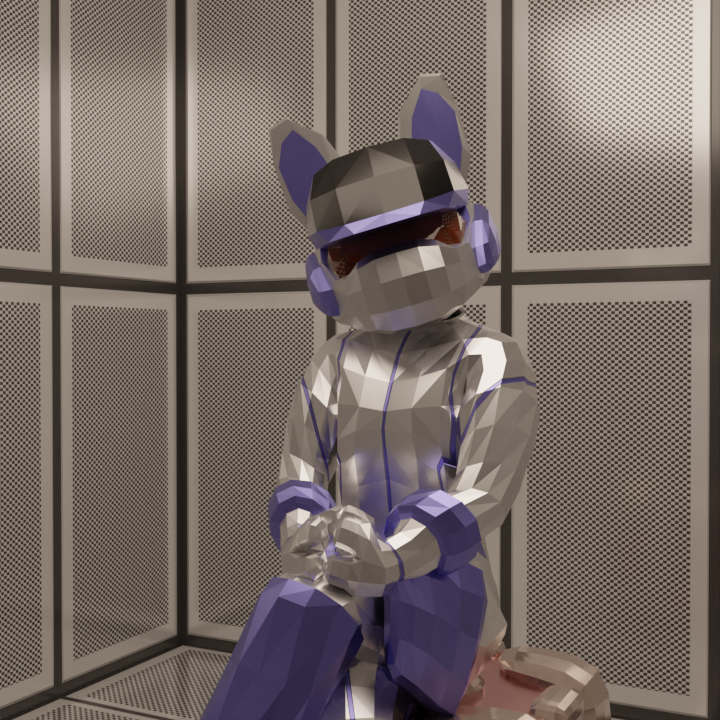
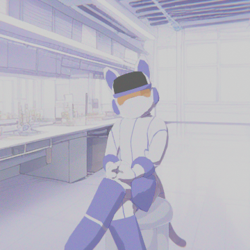
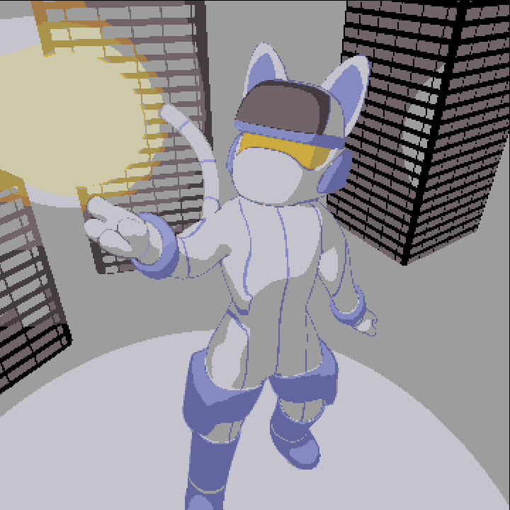

For this project the goal was to make a model and then see what different styles I could put it in. These styles would for sure be a test of my ability as 3D software can be somewhat limiting with certain ones. So far I have gotten three, all of which I am quite proud of.
The first of the three is the photo realism style. This one was a little difficult to achieve as the model is low-poly and I wanted the final render to reflect that. My final goal for this style was to make it look like a photograph of someone in a suit. After much fiddling with the lighting and environment, I am quite pleased with the result.

The next of the styles to work on was a 2D, flat shaded
anime. That is very tough to attain in a 3D context, so I had my work cut out
for me. The first step was the flat shaded material. This took some work, but in
the end is very reminiscent of the old era anime. Next was the pose. You see,
for something to look 2D I can't just use any pose, I need one that could be
able to be drawn without any very complex effort. At the end of the day, I ended
up with the same pose as the first render. The environment for this one is
actually a flat drawing, as I figured that would give off the best 2D feel. The
final step was compositor. Quite a few techniques were used here, including some
basic noise, a simple lens distortion, and some color correction. The result I
finished with, in my opinion, looks very convincingly two-dimensional and
overall has that anime feel to it.

The final style I wanted to try was pixel art. In a 3D
context, this means rendering at a lower resolution and limiting the amount of
colors. This proved more difficult that I originally though. To obtain the look
I was going for, I had to change the pose and camera angle.This one has a much
better pixel feel to it. I also limited the render resolution to 360x360. I
noticed that any lower than this would make the render look broken and the
outline wouldn't show. Limiting the colors required lots of work in the
compositor. I had to scan every pixel on the image and match it to the closest
color in my list colors I wanted to use. This took the color count down to 10
colors. Finally I had to figure out what kind of lighting I wanted to use. I
ended up with all the light in the scene coming from one point. This made all
the shadows and highlights have lots of contrast, which is good for pixel art.
The finished result definitely looks like pixel art and has a hand-drawn feel to
it, despite being a 3D render.
